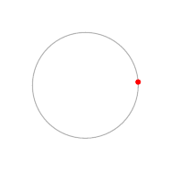

Drawing Metapost animations
Posted on July 15, 2018
The animation module provides a nice interface for using
FieldStacks to create a JavaScript controlled animations in
ConTeXt.1 For example, the following code will show step-1.pdf,
step-2.pdf, step-3.pdf, and step-4.pdf files one by one:
\usemodule[animation]
\startanimation[menu=yes]
{\useexternalfigure[step-1.pdf]}
{\useexternalfigure[step-2.pdf]}
{\useexternalfigure[step-3.pdf]}
{\useexternalfigure[step-4.pdf]}
\stopanimation
Sometimes, I use animation to give the illusion of motion. For example, to
show a particle moving along a trajectory (drawn using Metapost). In
principle, it is possible to use the animation module to draw such
animations (e.g., see Wolfgang’s reply in on ntg-context mailing list), but the
interface gets a bit cumbersome. In this post, I show a helper macro to
simplify drawing such animations.
As an example, I’ll consider the use case of drawing a particle moving in a circle. With the helper macros given below, we can use the following code:
\startMPanimation{circle}{n=100}
path p, q;
p := fullcircle scaled 2cm;
draw p withcolor 0.7white;
n := \MPvar{n};
t := \MPvar{t};
drawdot point (t/n) along p
withpen pencircle scaled 3bp withcolor red;
setbounds currentpicture to fullsquare scaled 2.2cm;
\stopMPanimation
\starttext
\useMPanimation[menu=yes,framerate=50]{circle}
\stoptext
to generate this animation
Thus, an animation is defined using \startMPanimation ... \stopMPanimation.
The macro takes one argument n=..., which specifies the total number of
frames. To use the animation, use
\useMPanimation[menu=yes,framerate=50]{circle}
where the options (in square brackets) are options to the \startanimation
macro from animation module. That’s it.
Behind the scenes, the \startMPanimation macro creates a useMPgraphic with
the name animation:circle, which takes two arguments n (which is the same
as before) and t (which specifies the current time or the current frame
number). The body of the environment is the metapost code which draws a figure
depending on the values of t and n. In the example above, I draw a circle
and a point t/n along the circle.
The macros \startMPanimation and \useMPanimation are a wrapper around the
code by Wolfgang:
\unprotect
\installnamespace{MPanimationvariables}
\unexpanded\def\startMPanimation
{\dodoublegroupempty\meta_start_animation}
\def\meta_start_animation#1%
{\normalexpanded{\meta_start_animation_indeed{#1}}}
\unexpanded\def\meta_start_animation_indeed#1#2#3\stopMPanimation
{\doifsomething{#2}{\getparameters[\????MPanimationvariables#1:][#2]}%
\setgvalue{\??mpgraphic animation:#1}{\meta_handle_use_graphic{#1}{n,t}{#3}}}
\let\stopMPanimation\relax
\unexpanded\def\useMPanimation%
{\dosingleargument\use_meta_animation}
\def\use_meta_animation[#1]#2%
{\edef\c_MP_animation_frames{\getvalue{\????MPanimationvariables#2:n}}%
\startanimation[#1]
\dorecurse{\c_MP_animation_frames}
{\expanded{\frame{\useMPgraphic{animation:#2}{n=\c_MP_animation_frames,t=\recurselevel}}}}
\stopanimation}
\protect
A test file and sample pdf output are below. The pdf file needs to be open in Adobe Acrobat to work:
- Warning: Such animations only work with Adobe Acrobat. [return]
This entry was posted in Metapost and tagged metapost, animation.